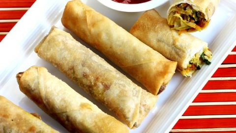
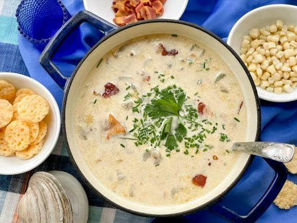
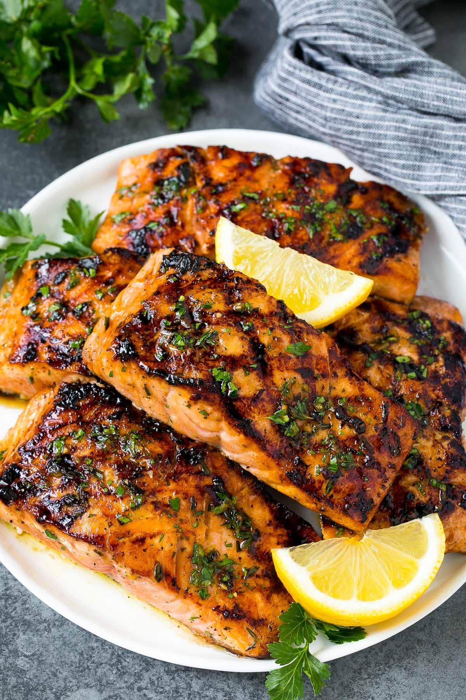
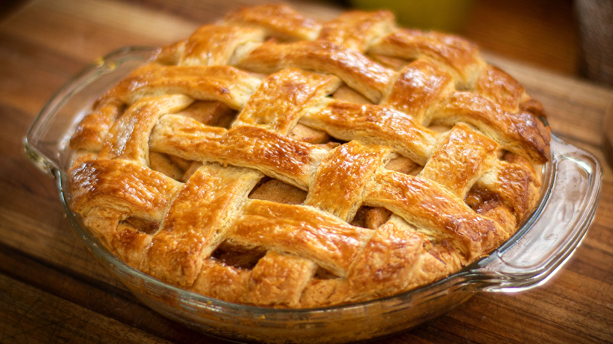
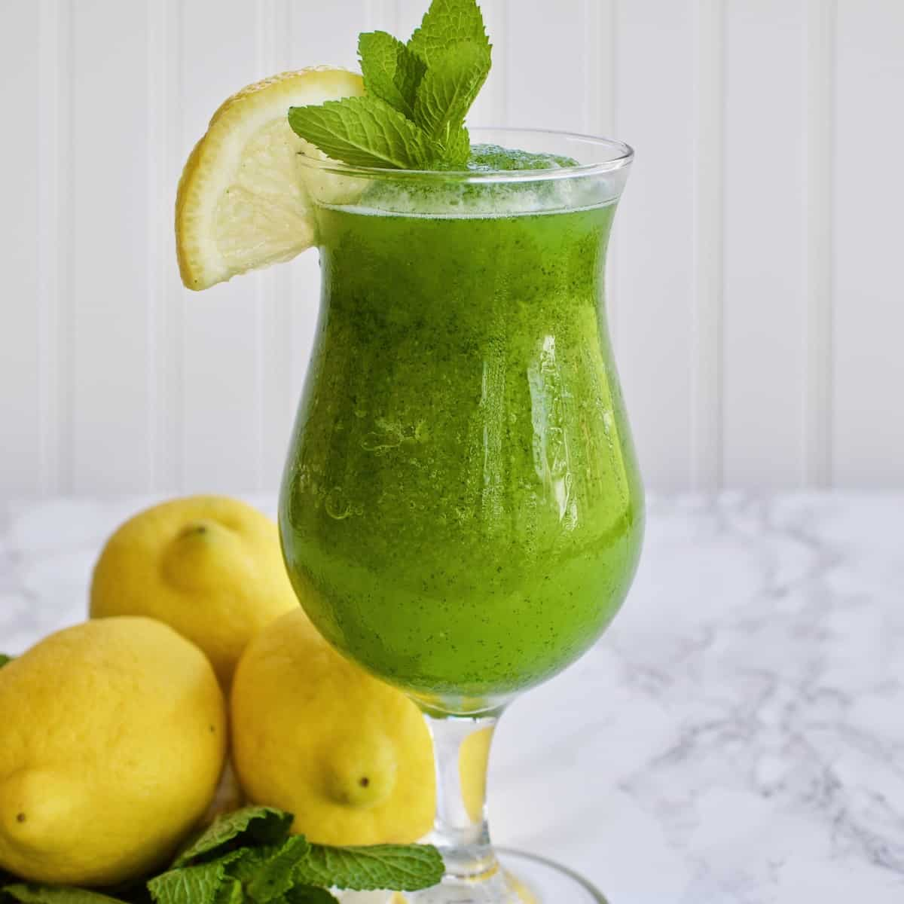

Paavish Singh's Sophmore Portfolio
My name is Paavish Singh and I believe that one way that the community can be Improved is
Kiri
The Resturants History, Traitions, Etc.
"Kiri's Kitchen is a cozy family-owned restaurant nestled in the heart of San Francisco. Established in 2015, it has been serving a fusion of traditional and modern American cuisines, providing a warm, welcoming ambiance that mirrors the comfort found in a family kitchen. The restaurant values fresh, locally sourced ingredients, community engagement, and providing a delightful dining experience that goes beyond just the meal. Kiri believes in creating a place where every diner feels at home while enjoying hearty, delicious meals.”
Menu
Appetizers
- Vegetable Spring Rolls
The Vegetable Spring Rolls are crispy rolls that are filled with fresh veggies and served with a sweet chili dip.
($6.95)

- Clam Chowder Soup
he Clam Chowder Soup is a creamy New England-style chowder that is rich with clams and potatoes.
($7.95)

Main Courses
- Grilled Salmon
he Grilled Salmon is a fan favorite with the freshly grilled salmon being served with a lemon-butter sauce, seasonal vegetables, and mashed potatoes.
($18.95)

- Classic Cheeseburger.
It is hard to pass up the Classic Cheeseburger though with its juicy beef patty served with cheddar cheese, lettuce, tomatoes, and house sauce. Don’t forget the side of fries!
($14.95)

The Desserts
- Apple Pie
The Apple Pie is a traditional apple pie topped with a scoop of vanilla ice cream and drizzled with caramel sauce ($6.95). The Chocolate Lava Cake is to die for as it is served warm with a molten center and a dollop of whipped cream on top.
($7.95)

- Chocolate Lava Cake
The Chocolate Lava Cake is to die for as it is served warm with a molten center and a dollop of whipped cream on top.
($7.95)

Drinks
- House Blend Coffee
The House Blend Coffee is a rich and smooth coffee blend that is freshly brewed when ordered.
($3.50)

- Mint Lemonade
The Mint Lemonade is a refreshing take on lemonade with a hint of mint.
($4.50)

Weekly Special
- Pasta Dish
Every Monday is Pasta Night at Kiri’s Kitchen where you can enjoy any pasta dish at a $2 discount.
($2 Dollars Off!)
- Winter Squash Soup
Available in the Winter is her Winter Squash Soup, a creamy squash soup topped with roasted pumpkin seeds.
($7.95)
- Summer Berry Salad
Available in the Summer in her Summer Berry Salad which includes mixed greens with fresh berries, goat cheese and a raspberry vinaigrette.
($10.95)
Reviews!
- Sara L left a 5-star review and said "The atmosphere is so warm and inviting, and the food is absolutely delicious! The grilled salmon is a must-try!"
- Mike D left a 4-star review and remarked, "I love the variety in the menu. The seasonal specials keep me coming back. Kiri's Kitchen has become our weekly dining spot."
- Emma R left a 5-star review and attested, "The apple pie is the best I've ever had. It's the perfect blend of sweet and tart, and the crust is just right. A cozy place with friendly staff!"
Contact Information, Location and Opening Hours
Phone number: (415) 555 - 1234 / Address: 123 Cozy Lane, San Francisco, CA 94102 / Open Mon-Sun 11:00 AM - 10:00 PM